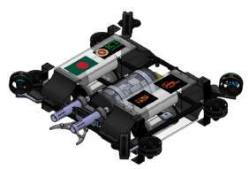
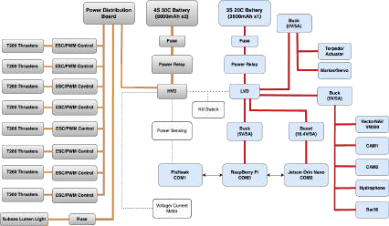
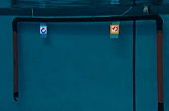

BengalSub · RoboSub 2025
Hangor 1.0 AUV
Hangor 1.0 is BengalSub’s modular autonomous underwater vehicle, developed for the team’s debut at RoboSub 2025. Designed and fabricated in Bangladesh, it brings together a marine-grade aluminum frame, custom watertight enclosures, onboard vision, and reactive mission planning in a platform built for underwater robotics tasks.
View source on GitHub ↗
Mechanical design
The vehicle uses a CNC-cut, 5 mm aluminum 5083 structure with an open frame that provides access to sensors, payloads, and electronics. Its modular mounting layout supports eight T200 thrusters, a marker dropper, and a dual-tube torpedo launcher. The thruster arrangement provides six-degree-of-freedom maneuverability.
SolidWorks modeling guided the placement of thruster mounts, electronics bays, and payload fixtures. Custom sealed enclosures protect computing and power components, while symmetrical component placement, adjustable ballast, and buoyancy foam help the vehicle approach neutral buoyancy and maintain balance during underwater tasks.

Electrical architecture
A Jetson Orin Nano handles perception and mission planning, with a Raspberry Pi supporting communication and auxiliary tasks. A Pixhawk flight controller translates high-level commands into low-level thruster and actuator control. The sensing system combines front and downward-facing cameras, a VectorNav VN200 inertial sensor, a Bar30 depth sensor, and a hydrophone array.
The power architecture separates high-current propulsion loads from computing and sensing electronics. Fuses, relays, regulated converters, and voltage/current monitoring protect the distribution paths. A custom power-distribution PCB organizes connections, while an external kill switch provides an emergency cutoff. Temperature and humidity monitoring inside the enclosure supports system-health checks.

Object detection and perception
Hangor’s vision pipeline uses YOLOv8 for object detection, TensorRT for inference acceleration on the Jetson, and OpenCV for image preprocessing. The front-facing camera supports gate and target recognition, while the downward-facing camera supports floor-marker tracking, drop-point recognition, and cleanup-task perception.
Detection results are published as ROS topics for navigation and mission logic. The report also describes HSV-based color detection for channel navigation and visual alignment before payload actions. These perception outputs let the mission controller connect detected targets with task-specific movement and actuation.

Autonomy and mission control
The ROS-based software stack uses a Behavior Tree to organize search, alignment, navigation, and actuation into modular tasks. It can retry or skip tasks as conditions change. MAVROS connects high-level motion commands to the Pixhawk, while PID control stabilizes movement and an Extended Kalman Filter combines inertial and depth-related measurements for localization. Acoustic localization uses hydrophone time differences of arrival.
The competition strategy prioritizes gate traversal and channel navigation before more complex marker-dropping, tagging, cleanup, and return tasks. These are the mission capabilities described in the design report. A hardware kill switch, software disarming, and watchdog monitoring provide layered recovery and safety mechanisms.
Testing and development
The report documents structural and fluid-flow simulations, electrical load monitoring, and vision-model training. A ROS-integrated Gazebo and RViz environment supports testing of vehicle dynamics, sensor inputs, control, and mission logic before physical deployment. The development record also includes prototype construction, pool testing, and testing at Cox’s Bazar.
Key engineering challenges included balancing weight and buoyancy, sealing custom enclosures, stabilizing power delivery, configuring the inertial sensor, and sustaining real-time detection with the available onboard compute.